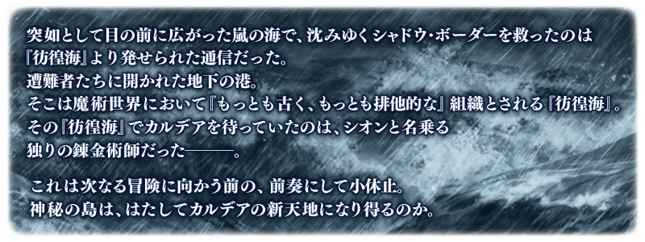
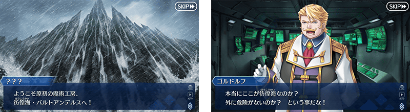
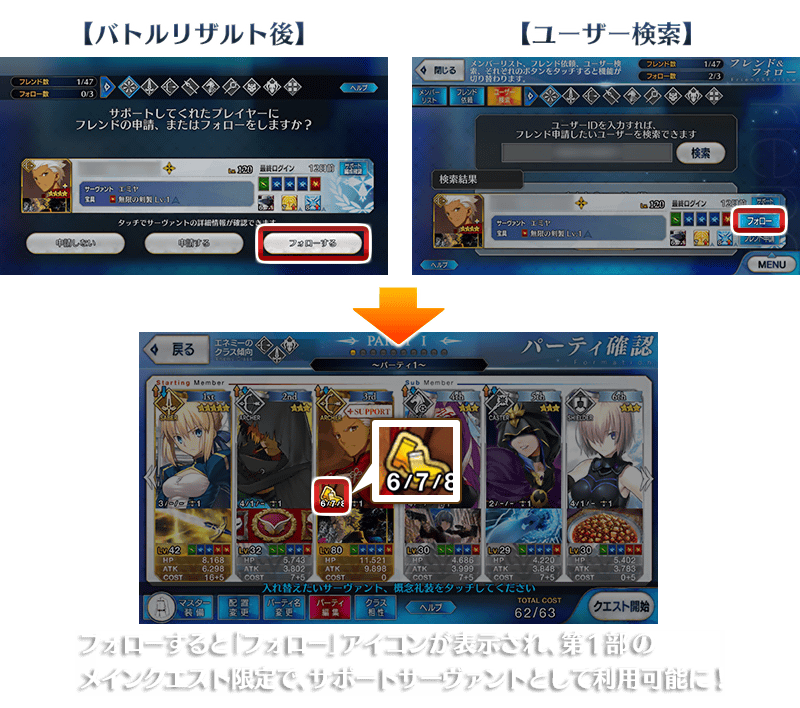
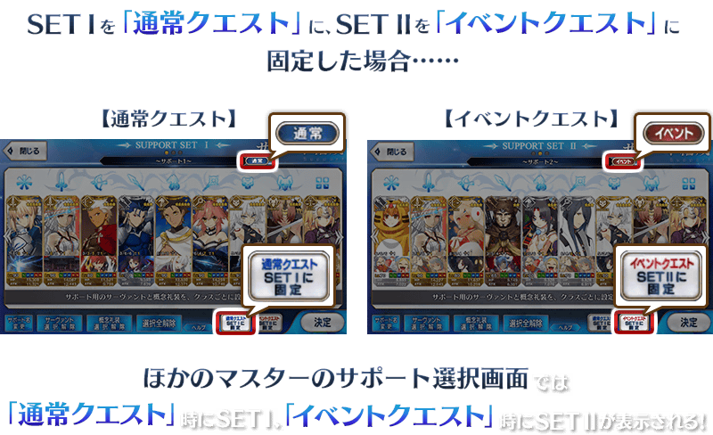
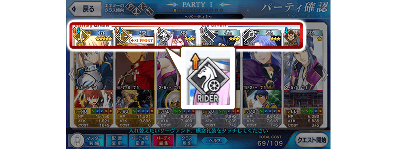
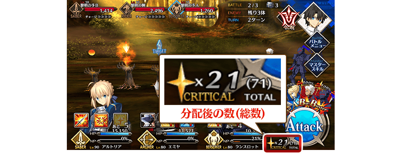
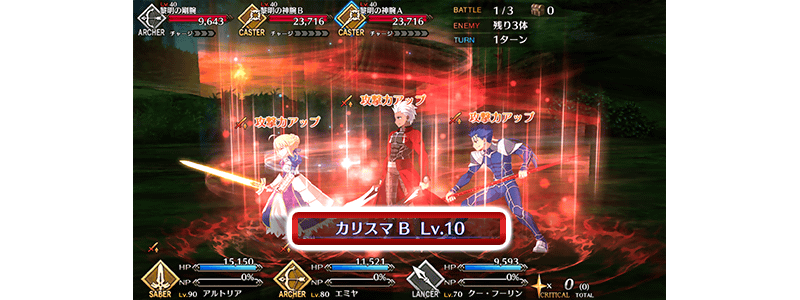
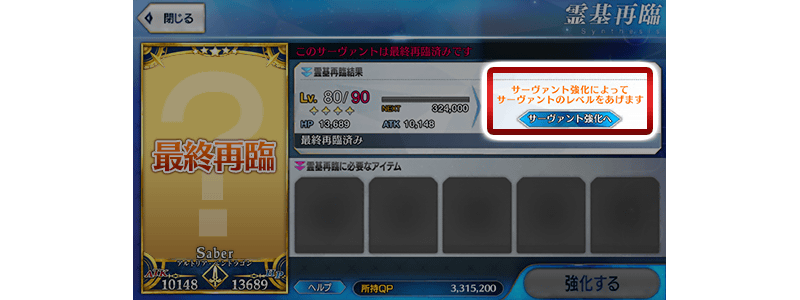

主線關卡第2部 第3章「Lostbelt No.3 人智統合真國 SIN 紅之月下美人」的序幕(Prologue)「Lostbelt No.3 － intro －」，為本編以先锋公開！
◆公開時間◆
2018年11月23日(五) 17:00～
◆開放條件◆
通過主線關卡第2部 第2章「Lostbelt No.2 無間冰焰世紀 諸神黃昏 不滅之火的好漢」後開放。
※不需要通過亞種特異點(從Ⅰ到Ⅳ)。

通過第2部 第1章的特定的主線關卡的話，會對瑪琇・基利艾拉特追加新職階技能「星見の旅路」。
「星見の旅路」是第2部 第1章以後的主線關卡限定，將瑪琇・基利艾拉特編入隊伍成員，通過關卡的話，會提升可於戰鬥結算畫面入手的絆點數。
能得到絆加成的效果，為在關卡同行隊伍的Servant全員對象。
※關於瑪琇・基利艾拉特是絆加成的對象外。
※「星見の旅路」只會在第2部 第1章以後的主線關卡發動，不會在自由關卡和挑戰關卡等此外的關卡發動。
※Guest Servant及好友的瑪琇・基利艾拉特做為支援欄位使用的情況不會發動。
◆追加時間◆
2018年11月23日(五) 17:00～
做為通過主線關卡第1部前的支援功能，新追加第1部的主線關卡限定可利用的「跟隨功能」。
「跟隨功能」是無須對方承認登錄至最多3人，跟隨Master的Servant與好友的Servant同様可做為支援Servant利用的功能。
跟隨Master的Servant會以「SUPPORT」顯示，由於NP量也會增加，也就能使用寶具。
跟隨Master被支援登錄並利用自身Servant的話，可獲得比做為好友功能的支援Servant利用情況更多的友情點數。
※跟隨中的Master的Servant可做為支援利用只限第1部的主線關卡對象，終局特異點通過後無法利用。
※能跟隨可能的Master數最多3人，不會隨著Master等級的上昇增加最大數。
※好友登錄中的Master也能跟隨。
◆追加時間◆
2018年11月23日(五) 17:00～

支援編成畫面中，變得可各自設定主線關卡和強化關卡、幕間物語等的「普通關卡」與期間限定活動等的「活動關卡」個別的編成支援。
點擊畫面下方的「普通關卡」或「活動關卡」，選擇該編成固定為關卡種別的支援に，就會在那關卡的支援選擇畫面顯示該編成。
設定在「普通關卡」「活動關卡」哪邊的編成，可靠在支援名右側顯示的判別。
※未設定各關卡種別的情況，會設定成顯示中的支援編成支援選擇畫面。
◆追加時間◆
2018年11月23日(五) 17:00～

關卡開始前的支援選擇畫面、隊伍確認畫面、Servant選擇畫面中，變得各Servant會以圖示顯示對上選擇關卡的「敵人的職階傾向」的職階相性。
◆追加時間◆
2018年11月23日(五) 17:00～

職階相性的有利・不利會以圖示箭頭的方向、顏色、長度程度變化。
在關卡出現的敵人職階傾向有複數顯示時，根據職階相性有利・不利混合的情況は會同時顯示有利・不利的圖示。
| 職階相性 | 顯示圖示 |
|---|---|
| 有利(大) | |
| 有利(中) | |
| 無有利・不利 | 不顯示 |
| 不利(中) | |
| 不利(大) |
戰鬥畫面中，變得會顯示持有的Critical星星總數(TOTAL)。
總數(TOTAL)也包含分配到指令卡的Critical星星數。
◆追加時間◆
2018年11月23日(五) 17:00～

戰鬥中，在使用Master技能及Servant技能時，追加可確認使用技能等級的顯示。
◆追加時間◆
2018年11月23日(五) 17:00～

在Servant最終再臨時，追加可移動到Servant強化畫面的按鍵。

◆追加時間◆
2018年11月23日(五) 17:00～
主線關卡第2部 第3章「Lostbelt No.3 人智統合真國 SIN 紅之月下美人」開幕前夕宣傳活動舉辦中！
主線關卡第2部 第3章 開幕前夕登入獎勵和通過第2部 第2章節就拿到聖晶石10個的期間限定Master任務等，關於開幕前夕宣傳活動的詳情請自下述橫幅確認。

關於主線關卡第2部 第3章「Lostbelt No.3 人智統合真國 SIN 紅之月下美人」的詳情請自下述橫幅確認。